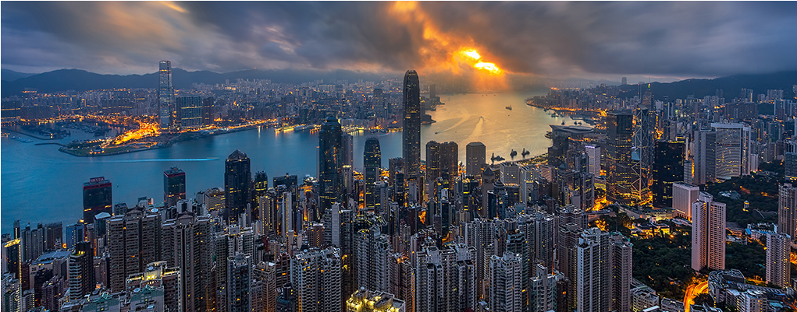
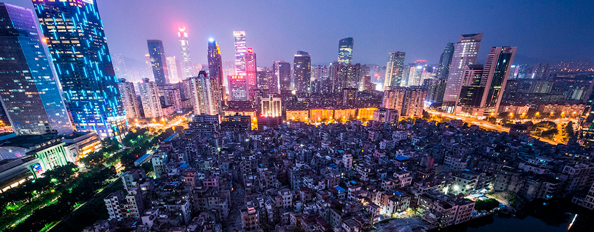
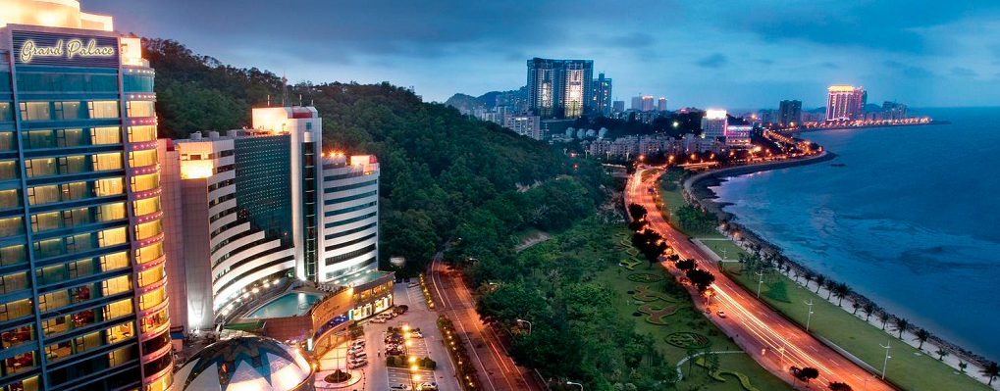
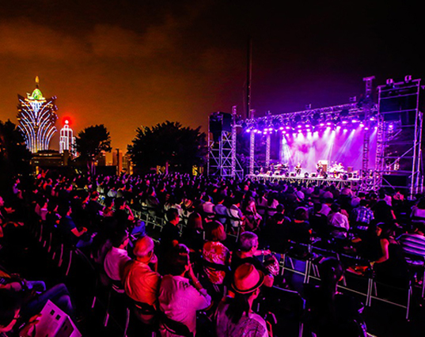
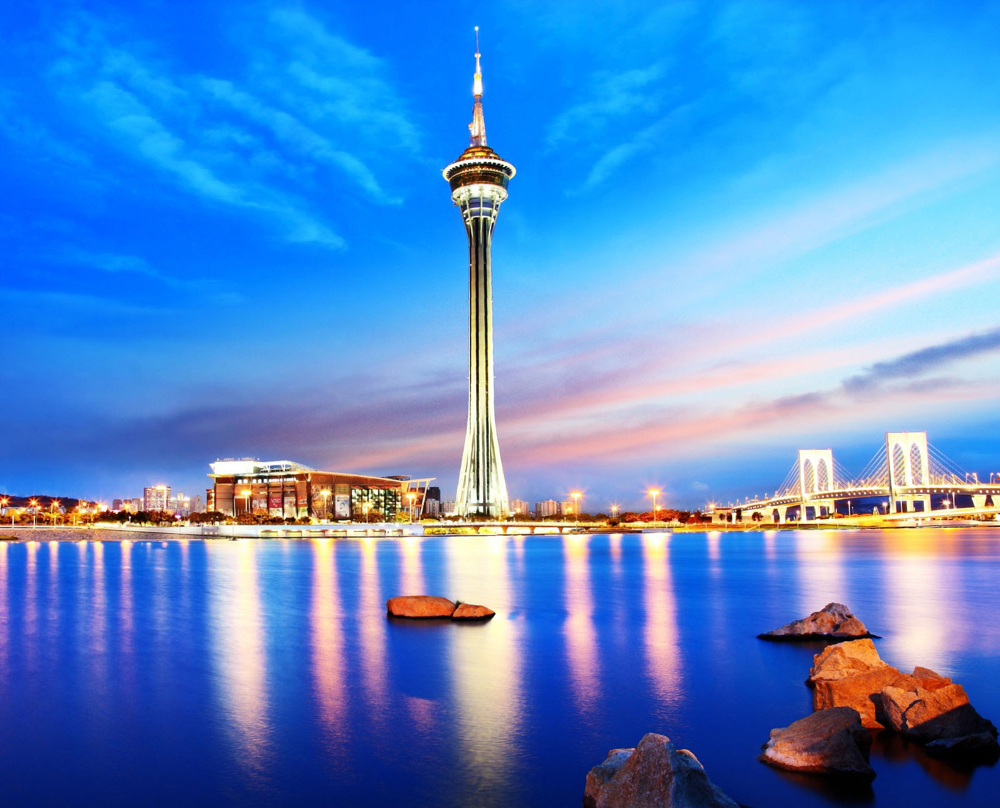
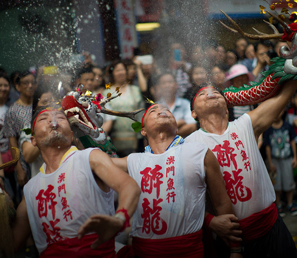
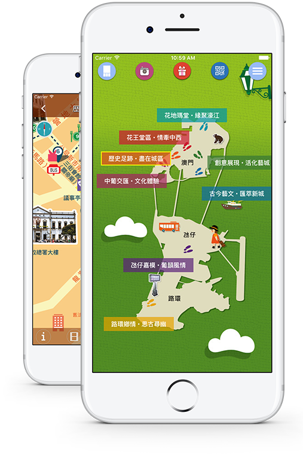

О Макао
Макао — это поистине удивительный регион, где в одном месте встречаются азиатская и европейская культуры. Дело в том, более 400 лет Макао был Португальской колонией, а в 1999 году территория была возвращена Китаю. Всё это естественным образом отразилось на культуре, искусстве, традициях, архитектуре и сделало данное место уникальным. Здесь шумные азиатские кварталы соседствуют со старыми европейскими улочками, а рядом с христианскими храмами возвышаются восточные пагоды. И, несмотря на то, что вот уже более 15 лет Макао является территорией Китая, местные жители тщательно оберегают своё европейское наследие и историю, тем самым сохраняя исключительность и неповторимую атмосферу.
Рождество и Китайский Новый год с его фейерверками, легендарный Гран-При Макао и Международный Музыкальный фестиваль, шумные рынки и маньерист-барочные католические храмы на фоне китайских вывесок... Добавить к этому огромное число отелей, ночных клубов, модных ресторанов, галерей, праздников и шоу, а также высокий уровень жизни и культуры, интереснейшую кухню, захватывающие виды, небоскребы и совершенно европейские улочки — и получится Макао.

{kind=link}
{kind=link}
{kind=link}
{kind=link}
{kind=link}
{kind=link}
Для граждан РФ
виза не требуется
виза не требуется
23 С° средняя
температура воздуха
температура воздуха
наследие
ЮНЕСКО
ЮНЕСКО
Способы добраться до Макао
До Макао путешественники могут добраться по суше, по морю или по воздуху. Вы можете долететь до международного аэропорта Макао прямым рейсом или рейсом с пересадками или использовать другие городские маршруты; кроме того, непосредственно из Гонконга и Шэньчжэня в Макао можно долететь на вертолете. Большое количество туристов добираются до Макао по морю через терминал Shun Tak Centre (Шун Так Сентр) (Сян Вань, Гонконг), Гонконгский международный аэропорт, Китайский (ГК) паромный терминал (Тсим Ша Цуй, Коулун, Гонконг), Шекоу (Шэньчжэнь) и Паромный терминал Фу Юн (Аэропорт Шэньчжэня).
в Макао из других городов
от 25 мин.
в Макао из других городов
от 25 мин.
в Макао из других городов
от 25 мин.





На пароме: время в пути ~ 55 мин., стоимость от 150 HKD
ОСТРОВ ГОНКОНГ — МАКАО:
Наиболее часто пассажирами используется паромный терминал Гонконг-Макао в Shun Tak Centre. Он расположен выше станции Sheung Wan MTR (метро) рядом с конечной остановкой автобусов. Паромное сообщение осуществляется двумя компаниями:
TurboJET предоставляет услуги скоростного сообщения 24 часа в сутки. Время в пути — приблизительно 1 час из Гонконга (Паромный терминал Гонконг-Макао) до Макао (Паромный терминал Макао илиВ ременный паромный терминал о. Тайпа). The Cotai Strip CotaiJet™ управляет паромным сообщением между Гонконгом (Паромный терминал Гонконг-Макао) и Макао (Временный паромный терминал о. Тайпа)
На вертолете: время в пути ~ 15-20 мин., стоимость от 2 300 HKD
Компания Sky Shuttle Helicopters Limited осуществляет перевозки пассажиров на вертолетах с вертолетной площадки, расположенной на крыше Shun Tak Centre (Сян Вань, Гонконг) до Паромного терминала Макао (Полуостров Макао) и наоборот. Каждый рейс занимает приблизительно 16 минут.
На пароме время в пути ~ 80 мин., стоимость от 180 HKD
Компания TurboJET осуществляет паромные перевозки между Макао (Паромный терминал Макао) и районом Нанша города Гуанчжоу по субботам и воскресениям.
На пароме: время в пути ~ 1 час 20 мин., стоимость от 235 HKD
Yuet Tung Shipping Co осуществляет паромное сообщение между Макао (Временный паромный терминал о. Тайпа) и Шэньчжэнем (Аэропорт Ше Коу и Шэньчжэнь — Паромный терминал Фу Юн). Поездка занимает приблизительно один час и двадцать минут.
TurboJET осуществляет перевозку пассажиров из Макао (Паромный терминал Макао) в Аэропорт Шеньчженя — Паромный терминал Фу Юн и обратно. Компания также предлагает поездки из Макао (Паромный терминал Макао или Временный паромный терминал о. Тайпа) в Шекоу, Шеньчжень и обратно. Время поездки составляет приблизительно 1 час.
На вертолете: время в пути ~ 15-25 мин., стоимость от 2350 HKD
Вертолетное сообщение между международным аэропортом Шэньчжэнь Бао, КНР и вертолетной площадкой, расположенной на крыше Паромного терминала Макао (Полуостров Макао). Перелет занимает приблизительно 15 минут днем и 25 минут ночью.
На автобусе:
Компания Kee Kwan Motor Road Co и Китайское Бюро путешествий (China Travel Service (Macau) Ltd) предоставляют услуги трансфера на автобусе с кондиционером из крупнейших городов в провинции Гуандун в Макао и обратно. Автобусы прибывают в Порт Гонбей (Gongbei) в Чжухае, где Вы можете пройти контрольно-пропускные пункты Порта Гонбей и Пограничные Ворота для въезда в Макао.
Время в пути ~ 2-3 часа, стоимость от 1000 HKD
Совершив перелет из Саньи (о. Хайнань) в Чжухай (примерно 1 час 20 мин) и далее на пароме от аэропорта Чжухай (экспресс-паром идет всего 20 минут) до Макао.
Наши новости

1-30 октября
Международный музыкальный фестиваль Макао
Международный музыкальный фестиваль в Макао – крупное ежегодное мероприятие, привлекающее в город сотни тысяч туристов в период с октября по ноябрь, на праздник ощущений собираются исполнители со всего мира, получившие международную известность. Программа, как правило, включает оперную, оркестровую и камерную музыку, китайскую народную музыку, джазовые композиции, Бродвейские постановки и живое

1-30 октября
Международный музыкальный фестиваль Макао
Международный музыкальный фестиваль в Макао – крупное ежегодное мероприятие, привлекающее в город сотни тысяч туристов в период с октября по ноябрь, на праздник ощущений собираются исполнители со всего мира, получившие международную известность. Программа, как правило, включает оперную, оркестровую и камерную музыку, китайскую народную музыку, джазовые композиции, Бродвейские постановки и живое
1-30 октября
Международный музыкальный фестиваль Макао
Международный музыкальный фестиваль в Макао – крупное ежегодное мероприятие, привлекающее в город сотни тысяч туристов в период с октября по ноябрь, на праздник ощущений собираются исполнители со всего мира, получившие международную известность. Программа, как правило, включает оперную, оркестровую и камерную музыку, китайскую народную музыку, джазовые композиции, Бродвейские постановки и живое
1-30 октября
Международный музыкальный фестиваль Макао
Международный музыкальный фестиваль в Макао – крупное ежегодное мероприятие, привлекающее в город сотни тысяч туристов в период с октября по ноябрь, на праздник ощущений собираются исполнители со всего мира, получившие международную известность. Программа, как правило, включает оперную, оркестровую и камерную музыку, китайскую народную музыку, джазовые композиции, Бродвейские постановки и живое

1-30 октября
Международный музыкальный фестиваль Макао
Международный музыкальный фестиваль в Макао – крупное ежегодное мероприятие, привлекающее в город сотни тысяч туристов в период с октября по ноябрь, на праздник ощущений собираются исполнители со всего мира, получившие международную известность. Программа, как правило, включает оперную, оркестровую и камерную музыку, китайскую народную музыку, джазовые композиции, Бродвейские постановки и живое
Подписка на новости
Будь в курсе всех событий Макао
Мобильное приложение для туристов
Выходи на прогулку по Макао!
Step Out, Macao
Мобильное приложение, выпущенное Управлением по Туризму Правительства Макао для широкого использования туристами, посещающими полуостров.
Приложение представляет восемь новых пешеходных маршрутов, разработанных Управлением по туризму в 2014 году под общей темой “Выходи на прогулку – окунись в городскую жизнь” и призванных пробудить более широкий интерес среди гостей города к менее известным, но характерным кварталам Макао.
